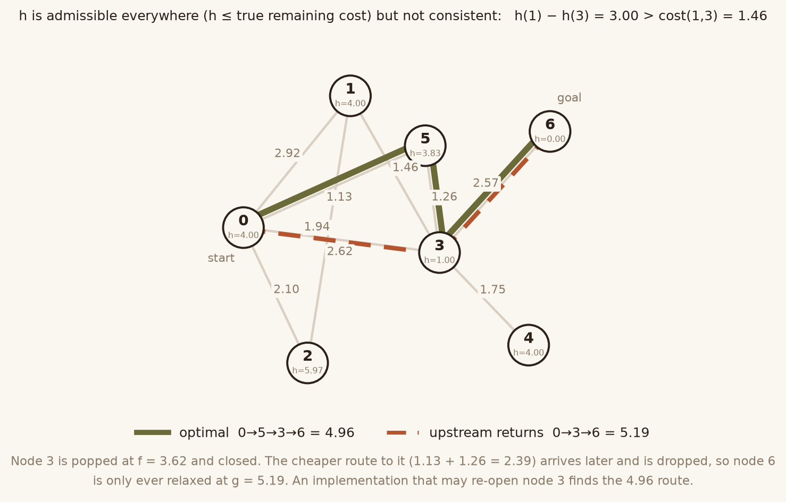
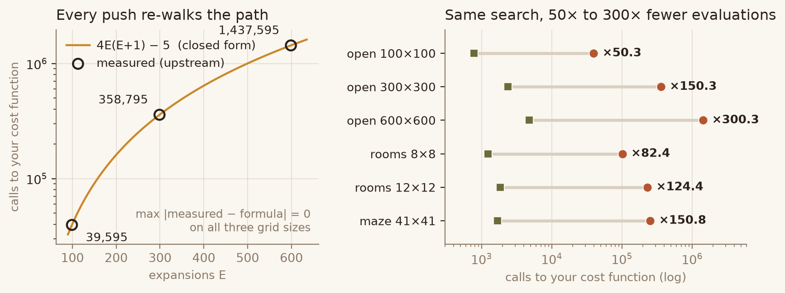
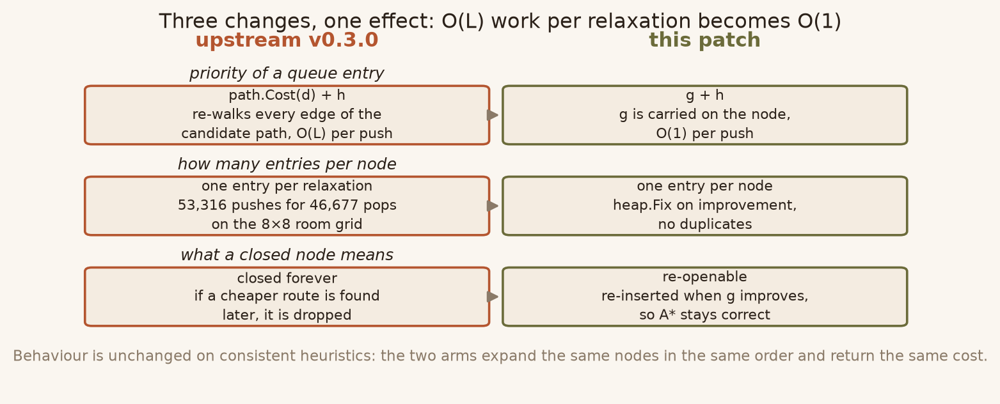
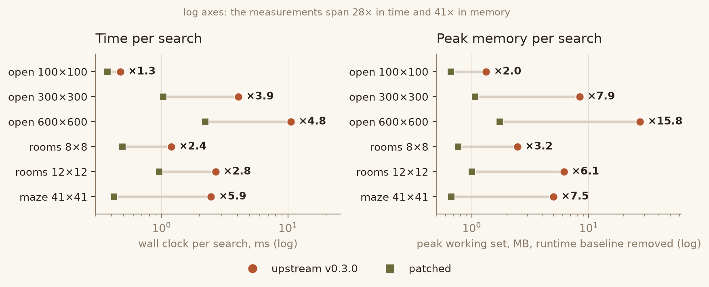

Upstream closes every expanded node forever and rebuilds the whole candidate path on every relaxation. The first habit returns a sub-optimal path whenever the heuristic is admissible but not consistent; the second makes a single search copy 4.7 million nodes. One rewrite fixes both.
A* may return early — and may refuse to re-open a node — only if the
heuristic is consistent, i.e. h(u) ≤ cost(u,v) + h(v)
for every edge. The package documentation never says that. Both of its
examples pass the same function as cost and as heuristic, which is
admissible but not necessarily consistent.
With an inconsistent heuristic, queue order stops being cost order. The destination pops before a cheaper route has reached it, and a node that is later reached more cheaply is discarded at the top of the loop.

h never overestimates the true remaining cost, verified
against Dijkstra. Node 3 closes at f = 3.62; the cheaper
route to it (1.13 + 1.26 = 2.39) arrives afterwards and is dropped.
Optimal answer 4.96, upstream answer 5.19.

d exactly 4E(E+1) − (8 − deg(start))
times, where E is the number of expansions. Measured and
predicted agree to the unit at 99, 299 and 599 expansions.
g, keep one entry per node, allow re-opening
g it arrived with, so priority is
g + h — one call to h per improving relaxation,
not one per edge of a copied path.heap.Fix; a node that has already been
popped is pushed again. There are no stale duplicates to skip.g”, the result is
optimal for every admissible heuristic, consistent or not. The path is
reconstructed once, at the end, from a predecessor table.
| workload | upstream | patched | speed | peak WS | d calls |
|---|---|---|---|---|---|
| open 100×100 | 0.47 ms | 0.37 ms | 1.3–1.6× | 2.0× | 50× |
| open 300×300 | 4.06 ms | 1.03 ms | 2.8–4.3× | 7.9× | 150× |
| open 600×600 | 11.74 ms | 2.35 ms | 4.3–4.9× | 15.8× | 300× |
| rooms 8×8 | 2.10 ms | 0.61 ms | 2.0–3.6× | 3.2× | 82× |
| rooms 12×12 | 4.71 ms | 1.14 ms | 2.8–3.9× | 6.1× | 124× |
| maze 41×41 | 3.94 ms | 0.55 ms | 6.0–7.9× | 7.5× | 151× |
Timings from two 9-round sessions plus three shorter runs; the range spans all five, because the same case moved 3.43× → 2.46× between sessions on an unchanged binary. The last two columns are deterministic counters and do not move at all between runs.
d-call counts do not: they follow a
closed form that both arms reproduce bit for bit, and the two arms expand
exactly the same number of nodes on every consistent-heuristic workload —
599, 299, 248, 164, 631. The patch does not search less; it stops
re-walking paths it has already costed.
GOOS=linux. Peak memory is a
Windows measurement (psapi.dll). And on ties the patched
version may return a different, equally optimal path than upstream; the
cost is what is guaranteed, not the node sequence.